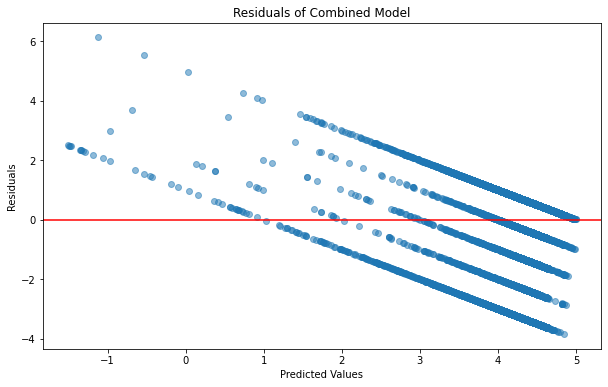
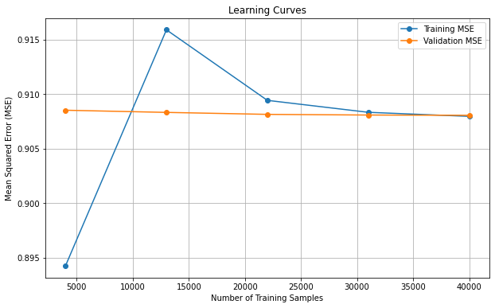

import json
import numpy as np
import pandas as pd
import math
from collections import defaultdict
from sklearn import linear_model
import random
from sklearn.metrics import accuracy_score, mean_squared_error
from sklearn.linear_model import LogisticRegression
import matplotlib.pyplot as plt
from sklearn.linear_model import Ridgef = open("review-Alabama_10.json")
review_df = []
for l in f:
review_df.append(json.loads(l))
f.close()review_df[0]{'user_id': '114043824230907811356',
'name': 'Kanisha Mixon',
'time': 1597168272670,
'rating': 5,
'text': 'Very Personable staff! Beautiful and clean environment. I will definitely become a regular customer!!',
'pics': None,
'resp': None,
'gmap_id': '0x8862134e67ff5c87:0x38b5e2ae99cd1fcf'}#Cleaning data to not include observations with "None" review
data = [review for review in review_df if review['text'] is not None]
data[0]{'user_id': '114043824230907811356',
'name': 'Kanisha Mixon',
'time': 1597168272670,
'rating': 5,
'text': 'Very Personable staff! Beautiful and clean environment. I will definitely become a regular customer!!',
'pics': None,
'resp': None,
'gmap_id': '0x8862134e67ff5c87:0x38b5e2ae99cd1fcf'}len(data)2700714#Convert unix time to datetime
from datetime import datetime
# Function to convert Unix time in milliseconds to a readable date format
def convert_unix_time_to_readable(unix_time_ms):
unix_time_s = unix_time_ms / 1000 # Convert from milliseconds to seconds
dt_object = datetime.utcfromtimestamp(unix_time_s)
return dt_object.strftime('%Y-%m-%d %H:%M:%S') # Format the date
for review in review_df:
if review['time'] is not None:
review['readable_time'] = convert_unix_time_to_readable(review['time'])#Parse Data Time
import dateutil.parser
for d in data:
t = dateutil.parser.parse(d['readable_time'])
d['parsed_date'] = tdata[0]{'user_id': '114043824230907811356',
'name': 'Kanisha Mixon',
'time': 1597168272670,
'rating': 5,
'text': 'Very Personable staff! Beautiful and clean environment. I will definitely become a regular customer!!',
'pics': None,
'resp': None,
'gmap_id': '0x8862134e67ff5c87:0x38b5e2ae99cd1fcf',
'readable_time': '2020-08-11 17:51:12',
'parsed_date': datetime.datetime(2020, 8, 11, 17, 51, 12)}#Subsetting data to first 50,000 observations
dataset = data[:50000]#Train a simple predictor that estimates rating from review length and time# Find the maximum review length
max_length = max(len(d['text']) for d in dataset)
max_length4089#One-Hot encode hours, weeks, and months
def one_hot_weekday(weekday):
return [1 if i == weekday else 0 for i in range(6)]
def one_hot_month(month):
return [1 if i == month-1 else 0 for i in range(11)]
def one_hot_hour(hour):
return [1 if i == hour else 0 for i in range(23)]
def feature(d):
feat = [1]
feat.append(len(d['text']) / max_length)
feat.extend(one_hot_weekday(t.weekday()))
feat.extend(one_hot_month(t.month))
feat.extend(one_hot_month(t.hour))
return featfeature = [feature(d) for d in dataset]
ratings = [d['rating'] for d in dataset]#Creating X and Y
X = np.matrix(feature)
Y = np.matrix(ratings).T#Fitting a model
model = linear_model.LinearRegression(fit_intercept=False)
model.fit(X, Y)
y_pred = model.predict(X)
theta = model.coef_
theta/Users/amber/opt/anaconda3/lib/python3.7/site-packages/sklearn/utils/validation.py:590: FutureWarning: np.matrix usage is deprecated in 1.0 and will raise a TypeError in 1.2. Please convert to a numpy array with np.asarray. For more information see: https://numpy.org/doc/stable/reference/generated/numpy.matrix.html
FutureWarning,
/Users/amber/opt/anaconda3/lib/python3.7/site-packages/sklearn/utils/validation.py:590: FutureWarning: np.matrix usage is deprecated in 1.0 and will raise a TypeError in 1.2. Please convert to a numpy array with np.asarray. For more information see: https://numpy.org/doc/stable/reference/generated/numpy.matrix.html
FutureWarning,
/Users/amber/opt/anaconda3/lib/python3.7/site-packages/sklearn/utils/validation.py:590: FutureWarning: np.matrix usage is deprecated in 1.0 and will raise a TypeError in 1.2. Please convert to a numpy array with np.asarray. For more information see: https://numpy.org/doc/stable/reference/generated/numpy.matrix.html
FutureWarning,array([[-7.69217925e+10, -5.86488067e+00, 0.00000000e+00,
0.00000000e+00, 0.00000000e+00, 0.00000000e+00,
3.84608962e+10, 0.00000000e+00, 0.00000000e+00,
0.00000000e+00, 0.00000000e+00, 0.00000000e+00,
0.00000000e+00, 0.00000000e+00, 0.00000000e+00,
3.84608962e+10, 0.00000000e+00, 0.00000000e+00,
0.00000000e+00, 0.00000000e+00, 0.00000000e+00,
0.00000000e+00, 0.00000000e+00, 0.00000000e+00,
0.00000000e+00, 0.00000000e+00, 0.00000000e+00,
0.00000000e+00, 0.00000000e+00, 0.00000000e+00]])#Calculating MSE
sse = sum([x**2 for x in (Y - y_pred)])
mse = sse / len(Y)
mse = mse[0, 0]
mse/Users/amber/opt/anaconda3/lib/python3.7/site-packages/sklearn/utils/validation.py:590: FutureWarning: np.matrix usage is deprecated in 1.0 and will raise a TypeError in 1.2. Please convert to a numpy array with np.asarray. For more information see: https://numpy.org/doc/stable/reference/generated/numpy.matrix.html
FutureWarning,1.3938920546221734print(Y.shape)
print(y_pred.shape)(50000, 1)
(50000, 1)def plot_residuals(y_actual, y_predicted, title="Residual Plot"):
# Convert y_actual and y_predicted to arrays
y_actual = np.array(y_actual)
y_predicted = np.array(y_predicted)
# Check if the arrays are 2D and reshape if needed
if len(y_actual.shape) == 2:
y_actual = y_actual.flatten()
if len(y_predicted.shape) == 2:
y_predicted = y_predicted.flatten()
# Calculate residuals
residuals = y_actual - y_predicted
# Create the residual plot
plt.figure(figsize=(10, 6))
plt.scatter(y_predicted, residuals, alpha=0.5)
plt.axhline(y=0, color='r', linestyle='-')
plt.title(title)
plt.xlabel('Predicted Values')
plt.ylabel('Residuals')
plt.show()# Plot residuals for the simple predictor model
plot_residuals(Y, y_pred, title="Residuals of Simple Predictor Model")#Training a Simple Model Using Response Length#Checking how responses are formatted
num_responses_to_print = 10
# Iterate through the dataset and print the responses
for i, record in enumerate(dataset):
if i < num_responses_to_print:
response = record['resp'] if record['resp'] is not None else "No response"
print(f"Response {i+1}: {response}")
else:
breakResponse 1: No response
Response 2: No response
Response 3: No response
Response 4: No response
Response 5: No response
Response 6: {'time': 1545580599480, 'text': "Our team loves being able to help, Ellen! Glad you enjoyed coming in to figure out the best items. If you need anything, we're always here for you. -Lisa V., Owner"}
Response 7: {'time': 1545668611183, 'text': "I hope it's not too late to thank you for this, Jacqueline -- we love helping out however we can. If you need anything else, feel free to stop by or give us a call. -Lisa V., Owner"}
Response 8: {'time': 1551991855460, 'text': "Happy you stopped in, Tammie! Hoping you'll make it back our way again soon. -Lisa V., Owner"}
Response 9: No response
Response 10: No response#Calculating maximum response length
#If response is None, length = 0
max_resp_length = max(len(d['resp']['text']) if d['resp'] is not None and 'text' in d['resp'] else 0 for d in dataset)
max_resp_length2615def feature(d):
resp_length = len(d['resp']) if d['resp'] is not None else 0
normalized_resp_length = resp_length / max_resp_length if max_resp_length > 0 else 0
return [1, normalized_resp_length]response = [feature(d) for d in dataset]
ratings = [d['rating'] for d in dataset]#Creating X and Y
X = np.matrix(response)
Y = np.matrix(ratings).Tresp_model = linear_model.LinearRegression(fit_intercept=False)
resp_model.fit(X, Y)
y_pred = resp_model.predict(X)
theta = resp_model.coef_
theta/Users/amber/opt/anaconda3/lib/python3.7/site-packages/sklearn/utils/validation.py:590: FutureWarning: np.matrix usage is deprecated in 1.0 and will raise a TypeError in 1.2. Please convert to a numpy array with np.asarray. For more information see: https://numpy.org/doc/stable/reference/generated/numpy.matrix.html
FutureWarning,
/Users/amber/opt/anaconda3/lib/python3.7/site-packages/sklearn/utils/validation.py:590: FutureWarning: np.matrix usage is deprecated in 1.0 and will raise a TypeError in 1.2. Please convert to a numpy array with np.asarray. For more information see: https://numpy.org/doc/stable/reference/generated/numpy.matrix.html
FutureWarning,
/Users/amber/opt/anaconda3/lib/python3.7/site-packages/sklearn/utils/validation.py:590: FutureWarning: np.matrix usage is deprecated in 1.0 and will raise a TypeError in 1.2. Please convert to a numpy array with np.asarray. For more information see: https://numpy.org/doc/stable/reference/generated/numpy.matrix.html
FutureWarning,array([[ 4.36298463, 58.29883714]])sse = sum([x**2 for x in (Y - y_pred)])
mse = sse / len(Y)
mse = mse[0, 0]
mse1.4832036022129724y_pred = resp_model.predict(X)
# Plot residuals for the response length model
plot_residuals(Y, y_pred, title="Residuals of Response Length Model")/Users/amber/opt/anaconda3/lib/python3.7/site-packages/sklearn/utils/validation.py:590: FutureWarning: np.matrix usage is deprecated in 1.0 and will raise a TypeError in 1.2. Please convert to a numpy array with np.asarray. For more information see: https://numpy.org/doc/stable/reference/generated/numpy.matrix.html
FutureWarning,#Combined Model - Using all features#Model with length of review, time, length of response, if pictures were includeddef feature(d):
feat = [1]
feat.append(len(d['text']) / max_length)
feat.extend(one_hot_weekday(t.weekday()))
feat.extend(one_hot_month(t.month))
feat.extend(one_hot_month(t.hour))
resp_length = len(d['resp']) if d['resp'] is not None else 0
feat.append(resp_length / max_resp_length)
feat.append(1 if d['pics'] is not None else 0)
return featfeatures = [feature(d) for d in dataset]
ratings = [d['rating'] for d in dataset]X = np.matrix(features)
Y = np.matrix(ratings).Tcombined_model = linear_model.LinearRegression(fit_intercept=False)
combined_model.fit(X, Y)
y_pred = combined_model.predict(X)
theta = combined_model.coef_
theta/Users/amber/opt/anaconda3/lib/python3.7/site-packages/sklearn/utils/validation.py:590: FutureWarning: np.matrix usage is deprecated in 1.0 and will raise a TypeError in 1.2. Please convert to a numpy array with np.asarray. For more information see: https://numpy.org/doc/stable/reference/generated/numpy.matrix.html
FutureWarning,
/Users/amber/opt/anaconda3/lib/python3.7/site-packages/sklearn/utils/validation.py:590: FutureWarning: np.matrix usage is deprecated in 1.0 and will raise a TypeError in 1.2. Please convert to a numpy array with np.asarray. For more information see: https://numpy.org/doc/stable/reference/generated/numpy.matrix.html
FutureWarning,
/Users/amber/opt/anaconda3/lib/python3.7/site-packages/sklearn/utils/validation.py:590: FutureWarning: np.matrix usage is deprecated in 1.0 and will raise a TypeError in 1.2. Please convert to a numpy array with np.asarray. For more information see: https://numpy.org/doc/stable/reference/generated/numpy.matrix.html
FutureWarning,array([[-7.02603323e+12, -6.02746744e+00, 9.02683452e+05,
4.73454590e+01, 3.65812266e+00, 0.00000000e+00,
1.14408444e+12, 0.00000000e+00, 0.00000000e+00,
0.00000000e+00, 0.00000000e+00, 0.00000000e+00,
0.00000000e+00, 0.00000000e+00, 0.00000000e+00,
5.88194879e+12, 0.00000000e+00, 0.00000000e+00,
0.00000000e+00, 0.00000000e+00, 0.00000000e+00,
0.00000000e+00, 0.00000000e+00, 0.00000000e+00,
0.00000000e+00, 0.00000000e+00, 0.00000000e+00,
0.00000000e+00, 0.00000000e+00, 0.00000000e+00,
1.65198463e+02, 3.49223389e-01]])sse = sum([x**2 for x in (Y - y_pred)])
mse = sse / len(Y)
mse = mse[0, 0]
mse1.3879576796913147y_pred = combined_model.predict(X)
plot_residuals(Y, y_pred, title="Residuals of Combined Model")/Users/amber/opt/anaconda3/lib/python3.7/site-packages/sklearn/utils/validation.py:590: FutureWarning: np.matrix usage is deprecated in 1.0 and will raise a TypeError in 1.2. Please convert to a numpy array with np.asarray. For more information see: https://numpy.org/doc/stable/reference/generated/numpy.matrix.html
FutureWarning,
#Validating Simple Regression Model#Setting up max review an max response length for entire cleaned data
max_length = max(len(d['text']) for d in data)
max_resp_length = max(len(d['resp']['text']) if d['resp'] is not None and 'text' in d['resp'] else 0 for d in data)
print(max_length)
print(max_resp_length)6001
3993#Shuffle data to avoid biases
random.seed(0)
random.shuffle(data)#Subsetting dataset into Training and Testing
dataTrain = data[:50000]
dataValid = data[50000:100000]
dataTest = data[100000:150000]#Predicting positive ratings (3 or greater)
yTrain = [d['rating'] >= 3 for d in dataTrain]
yValid = [d['rating'] >= 3 for d in dataValid]
yTest = [d['rating'] >= 3 for d in dataTest]#Predicting numerical ratings
yTrain_num = [d['rating'] for d in dataTrain]
yValid_num = [d['rating'] for d in dataValid]
yTest_num = [d['rating'] for d in dataTest]# Define the feature function with lengths as parameters
def feature(d, max_length, max_resp_length):
feat = [1]
feat.append(len(d['text']) / max_length)
t = dateutil.parser.parse(d['readable_time'])
feat.extend(one_hot_weekday(t.weekday()))
feat.extend(one_hot_month(t.month))
feat.extend(one_hot_hour(t.hour))
resp_length = len(d['resp']) if d['resp'] is not None else 0
feat.append(resp_length / max_resp_length)
feat.append(1 if d['pics'] is not None else 0)
return feat#from sklearn.linear_model import LogisticRegression
# Define the pipeline function
def pipeline(reg, dataTrain, dataValid, dataTest, yTrain, yValid, yTest, max_length, max_resp_length):
mod = LogisticRegression(C=reg, class_weight='balanced')
Xtrain = [feature(d, max_length, max_resp_length) for d in dataTrain]
Xvalid = [feature(d, max_length, max_resp_length) for d in dataValid]
Xtest = [feature(d, max_length, max_resp_length) for d in dataTest]
mod.fit(Xtrain, yTrain)
ypredValid = mod.predict(Xvalid)
ypredTest = mod.predict(Xtest)
# Validation
TP = sum([(a and b) for (a, b) in zip(yValid, ypredValid)])
TN = sum([(not a and not b) for (a, b) in zip(yValid, ypredValid)])
FP = sum([(not a and b) for (a, b) in zip(yValid, ypredValid)])
FN = sum([(a and not b) for (a, b) in zip(yValid, ypredValid)])
TPR = TP / (TP + FN)
TNR = TN / (TN + FP)
vBER = 1 - 0.5 * (TPR + TNR)
print("C = " + str(reg) + "; validation BER = " + str(vBER))
# Test
TP = sum([(a and b) for (a, b) in zip(yTest, ypredTest)])
TN = sum([(not a and not b) for (a, b) in zip(yTest, ypredTest)])
FP = sum([(not a and b) for (a, b) in zip(yTest, ypredTest)])
FN = sum([(a and not b) for (a, b) in zip(yTest, ypredTest)])
TPR = TP / (TP + FN)
TNR = TN / (TN + FP)
tBER = 1 - 0.5 * (TPR + TNR)
print("C = " + str(reg) + "; test BER = " + str(tBER))
return mod, vBER, tBER#Tuning C
best_C = None
best_vBER = float('inf')
best_tBER = float('inf')
for c in [0.001, 0.01, 0.1, 1, 10, 100]:
_, vBER, tBER = pipeline(c, dataTrain, dataValid, dataTest, yTrain, yValid, yTest, max_length, max_resp_length)
print(f"C = {c}; Validation BER: {vBER}, Test BER: {tBER}")
if vBER < best_vBER:
best_C = c
best_vBER = vBER
best_tBER = tBER
print(f"Best C: {best_C}, Best Validation BER: {best_vBER}, Best Test BER: {best_tBER}")C = 0.001; validation BER = 0.47202592885209893
C = 0.001; test BER = 0.4707742928921901
C = 0.001; Validation BER: 0.47202592885209893, Test BER: 0.4707742928921901
C = 0.01; validation BER = 0.42926650841177616
C = 0.01; test BER = 0.4336540383860571
C = 0.01; Validation BER: 0.42926650841177616, Test BER: 0.4336540383860571
C = 0.1; validation BER = 0.37281183540077223
C = 0.1; test BER = 0.3750971941040514
C = 0.1; Validation BER: 0.37281183540077223, Test BER: 0.3750971941040514
C = 1; validation BER = 0.3633908104168644
C = 1; test BER = 0.36400684351451407
C = 1; Validation BER: 0.3633908104168644, Test BER: 0.36400684351451407
C = 10; validation BER = 0.36319396074937027
C = 10; test BER = 0.3630690740255098
C = 10; Validation BER: 0.36319396074937027, Test BER: 0.3630690740255098
C = 100; validation BER = 0.3626061950636674
C = 100; test BER = 0.3632271866300768
C = 100; Validation BER: 0.3626061950636674, Test BER: 0.3632271866300768
Best C: 100, Best Validation BER: 0.3626061950636674, Best Test BER: 0.3632271866300768# Call the pipeline function with C = 100
model, vBER, tBER = pipeline(100, dataTrain, dataValid, dataTest, yTrain, yValid, yTest, max_length, max_resp_length)C = 100; validation BER = 0.3626061950636674
C = 100; test BER = 0.3632271866300768# Train model on the training data
X_train = [feature(d, max_length, max_resp_length) for d in dataTrain]
# Regularized regression
clf = linear_model.Ridge(1.0, fit_intercept=False) # MSE + 1.0 l2
clf.fit(X_train, yTrain_num)
theta = clf.coef_X_valid = [feature(d, max_length, max_resp_length) for d in dataValid]
X_test = [feature(d, max_length, max_resp_length) for d in dataTest]predictions_valid = clf.predict(X_valid)
predictions_test = clf.predict(X_test)# Calculate MSE
mse_valid = mean_squared_error(yValid_num, predictions_valid)
mse_test = mean_squared_error(yTest_num, predictions_test)
print("Validation MSE:", mse_valid)
print("Test MSE:", mse_test)Validation MSE: 1.3284082109787654
Test MSE: 1.3438885745631497# Calculate accuracy
threshold = 3
binary_predictions_valid = [1 if p >= threshold else 0 for p in predictions_valid]
binary_predictions_test = [1 if p >= threshold else 0 for p in predictions_test]accuracy_valid = accuracy_score(yValid, binary_predictions_valid)
accuracy_test = accuracy_score(yTest, binary_predictions_test)
print("Validation Accuracy:", accuracy_valid)
print("Test Accuracy:", accuracy_test)Validation Accuracy: 0.89184
Test Accuracy: 0.89006#Plots of Validated Model# Assuming you have your model (clf) and data ready
from sklearn.model_selection import learning_curve
train_sizes, train_scores, valid_scores = learning_curve(clf, X_train, yTrain_num, cv=5, scoring='neg_mean_squared_error')
# Calculate mean squared errors
train_mse = -train_scores.mean(axis=1)
valid_mse = -valid_scores.mean(axis=1)
# Create learning curve plot
plt.figure(figsize=(10, 6))
plt.plot(train_sizes, train_mse, marker='o', label='Training MSE')
plt.plot(train_sizes, valid_mse, marker='o', label='Validation MSE')
plt.xlabel('Number of Training Samples')
plt.ylabel('Mean Squared Error (MSE)')
plt.title('Learning Curves Model 1')
plt.legend()
plt.grid(True)
plt.show()#Sentiment Analysis Model#pip install nltkRequirement already satisfied: nltk in /Users/amber/opt/anaconda3/lib/python3.7/site-packages (3.6.5)
Requirement already satisfied: click in /Users/amber/opt/anaconda3/lib/python3.7/site-packages (from nltk) (8.0.3)
Requirement already satisfied: joblib in /Users/amber/opt/anaconda3/lib/python3.7/site-packages (from nltk) (1.1.0)
Requirement already satisfied: regex>=2021.8.3 in /Users/amber/opt/anaconda3/lib/python3.7/site-packages (from nltk) (2021.8.3)
Requirement already satisfied: tqdm in /Users/amber/opt/anaconda3/lib/python3.7/site-packages (from nltk) (4.62.3)
Requirement already satisfied: importlib-metadata in /Users/amber/opt/anaconda3/lib/python3.7/site-packages (from click->nltk) (4.8.1)
Requirement already satisfied: typing-extensions>=3.6.4 in /Users/amber/opt/anaconda3/lib/python3.7/site-packages (from importlib-metadata->click->nltk) (4.7.1)
Requirement already satisfied: zipp>=0.5 in /Users/amber/opt/anaconda3/lib/python3.7/site-packages (from importlib-metadata->click->nltk) (3.6.0)
Note: you may need to restart the kernel to use updated packages.from nltk.sentiment.vader import SentimentIntensityAnalyzer
from collections import defaultdict
import stringsid = SentimentIntensityAnalyzer()
punctuation = set(string.punctuation)def review_sentiment_feature(d):
r = ''.join([c for c in d['text'].lower() if not c in punctuation])
sentiment = sid.polarity_scores(r)
overall_sentiment = sentiment['compound']
return [overall_sentiment, 1]def response_sentiment_feature(d):
if d.get('resp') and 'text' in d['resp']:
response_text = ''.join([c for c in d['resp']['text'].lower() if c not in punctuation])
return sid.polarity_scores(response_text)['compound']
else:
return 0def sentiment_feature(d):
feat = [1]
# Calculate sentiment score for review text
review_text = ''.join([c for c in d['text'].lower() if c not in punctuation])
review_sentiment = sid.polarity_scores(review_text)['compound']
feat.append(review_sentiment)
# Calculate sentiment score for response text, if available
if d.get('resp') and 'text' in d['resp']:
response_text = ''.join([c for c in d['resp']['text'].lower() if c not in punctuation])
response_sentiment = sid.polarity_scores(response_text)['compound']
else:
response_sentiment = 0 # Default to 0 if no response text
feat.append(response_sentiment)
return feat# Checking sentimate scores of review text
# Iterate through the dataset
for i, d in enumerate(dataset[:10]):
sentiment_score = review_sentiment_feature(d)
text = d['text']
rating = d['rating']
print(f"Text {i+1}: {text}")
print(f"Rating: {rating}, Sentiment Score: {sentiment_score}\n") Text 1: Very Personable staff! Beautiful and clean environment. I will definitely become a regular customer!!
Rating: 5, Sentiment Score: [0.8612, 1]
Text 2: Best clothing intown
Rating: 5, Sentiment Score: [0.6369, 1]
Text 3: Not friendly at all, as I ask questions about a seat it was like I was nothing more than a bother.... I am all for supporting local businesses. However, the attitude did it for me on this one!
Rating: 1, Sentiment Score: [0.6142, 1]
Text 4: They have beautiful baby and children's clothing, shoes, cloth diapers, jewelry including amber necklaces. Cribs and bedding. Hair bows galore! I love going in to shop for my granddaughter occasionally but it's expensive! That's the only reason I don't give it 5 stars. Cute and Posh!
Rating: 4, Sentiment Score: [0.8422, 1]
Text 5: Cute shop, but the lack of boy clothes is sad. There were multiple racks of girl clothes and maybe 2 racks of boy clothes. Check out All About Baby in Huntsville instead, many more boy clothing options.
Rating: 3, Sentiment Score: [-0.7269, 1]
Text 6: Great local shop for all your baby needs. The staff is friendly and very knowledgeable. It is nice to be able to actually touch and see the products before you buy them!
Rating: 5, Sentiment Score: [0.8779, 1]
Text 7: If you need anything for baby ,this is your place ! Very friendly , helpful and kind staff ! You can get anything pertaining to baby or mommy here ! Cribs,rockers, clothes car seats to bows and necklace. Love this place !!
Rating: 5, Sentiment Score: [0.9345, 1]
Text 8: Great help. Unusual items. Beautiful gift bag.
Rating: 4, Sentiment Score: [0.9274, 1]
Text 9: I cant thank them enough for all there help and guidance through our cloth diapering and preemie clothing. Our little girl was 34 weeks and Lisa made sure clothes we got would fit. Which can be confusing considering all the sizes p1,p2,p3 ,preemie, newborn and etc. Which to a Dad can be hard to keep straight and overwhelming sometimes. Excellent service all the around. Thanks you so much.
Rating: 5, Sentiment Score: [0.8907, 1]
Text 10: Great place to shop for babies and small children. They have clothes, furniture, and do monograms. The staff and owners are very helpful and accommodating.
Rating: 5, Sentiment Score: [0.8016, 1]
# Checking sentimate scores of response text
# Iterate through the dataset
for i, d in enumerate(dataset[:10]):
response_sentiment = response_sentiment_feature(d)
response_text = d['resp']['text'] if d.get('resp') and 'text' in d['resp'] else "No response"
print(f"Response {i+1}: {response_text}")
print(f"Response Sentiment Score: {response_sentiment}\n")Response 1: No response
Response Sentiment Score: 0
Response 2: No response
Response Sentiment Score: 0
Response 3: No response
Response Sentiment Score: 0
Response 4: No response
Response Sentiment Score: 0
Response 5: No response
Response Sentiment Score: 0
Response 6: Our team loves being able to help, Ellen! Glad you enjoyed coming in to figure out the best items. If you need anything, we're always here for you. -Lisa V., Owner
Response Sentiment Score: 0.9509
Response 7: I hope it's not too late to thank you for this, Jacqueline -- we love helping out however we can. If you need anything else, feel free to stop by or give us a call. -Lisa V., Owner
Response Sentiment Score: 0.9169
Response 8: Happy you stopped in, Tammie! Hoping you'll make it back our way again soon. -Lisa V., Owner
Response Sentiment Score: 0.6808
Response 9: No response
Response Sentiment Score: 0
Response 10: No response
Response Sentiment Score: 0
X = [sentiment_feature(d) for d in dataset]
y = [d['rating'] for d in dataset]
# Regularized regression
clf = linear_model.Ridge(1.0, fit_intercept=False) # MSE + 1.0 l2
clf.fit(X, y)
theta = clf.coef_
predictions = clf.predict(X)mse = sum((y - predictions) ** 2) / len(y)
mse0.91194308795543#Validating Sentiment Modeldef calculate_BER(y_true, y_pred):
TP = sum([(a and b) for (a, b) in zip(y_true, y_pred)])
TN = sum([(not a and not b) for (a, b) in zip(y_true, y_pred)])
FP = sum([(not a and b) for (a, b) in zip(y_true, y_pred)])
FN = sum([(a and not b) for (a, b) in zip(y_true, y_pred)])
TPR = TP / (TP + FN) if (TP + FN) > 0 else 0
TNR = TN / (TN + FP) if (TN + FP) > 0 else 0
return 1 - 0.5 * (TPR + TNR)
def sentiment_pipeline(reg, dataTrain, dataValid, dataTest, yTrain, yValid, yTest):
mod = LogisticRegression(C=reg, class_weight='balanced')
# Use sentiment_feature for feature extraction
Xtrain = [sentiment_feature(d) for d in dataTrain]
Xvalid = [sentiment_feature(d) for d in dataValid]
Xtest = [sentiment_feature(d) for d in dataTest]
mod.fit(Xtrain, yTrain)
ypredValid = mod.predict(Xvalid)
ypredTest = mod.predict(Xtest)
# Calculate BER for validation and test sets
BER_valid = calculate_BER(yValid, ypredValid)
BER_test = calculate_BER(yTest, ypredTest)
print(f"C = {reg}; Validation BER = {BER_valid}, Test BER = {BER_test}")
return mod, BER_valid, BER_test#Tuning C
best_C = None
best_BER_valid = float('inf')
best_BER_test = float('inf')
for c in [0.001, 0.01, 0.1, 1, 10, 100]:
_, BER_valid, BER_test = sentiment_pipeline(c, dataTrain, dataValid, dataTest, yTrain, yValid, yTest)
print(f"C = {c}; Validation BER: {BER_valid}, Test BER: {BER_test}")
if BER_valid < best_BER_valid:
best_C = c
best_BER_valid = BER_valid
best_BER_test = BER_test
print(f"Best C: {best_C}, Best Validation BER: {best_BER_valid}, Best Test BER: {best_BER_test}")C = 0.001; Validation BER = 0.189539516543475, Test BER = 0.18884248953206706
C = 0.001; Validation BER: 0.189539516543475, Test BER: 0.18884248953206706
C = 0.01; Validation BER = 0.18802803554292236, Test BER = 0.18815793539301917
C = 0.01; Validation BER: 0.18802803554292236, Test BER: 0.18815793539301917
C = 0.1; Validation BER = 0.1880896226026667, Test BER = 0.18797597551153156
C = 0.1; Validation BER: 0.1880896226026667, Test BER: 0.18797597551153156
C = 1; Validation BER = 0.18806525622884895, Test BER = 0.1880097114267869
C = 1; Validation BER: 0.18806525622884895, Test BER: 0.1880097114267869
C = 10; Validation BER = 0.18807648007728206, Test BER = 0.18802095673187202
C = 10; Validation BER: 0.18807648007728206, Test BER: 0.18802095673187202
C = 100; Validation BER = 0.18807648007728206, Test BER = 0.18802095673187202
C = 100; Validation BER: 0.18807648007728206, Test BER: 0.18802095673187202
Best C: 0.01, Best Validation BER: 0.18802803554292236, Best Test BER: 0.18815793539301917#Call pipeline with C = .01
sentiment_pipeline(.01, dataTrain, dataValid, dataTest, yTrain, yValid, yTest)C = 0.01; Validation BER = 0.18802803554292236, Test BER = 0.18815793539301917(LogisticRegression(C=0.01, class_weight='balanced'),
0.18802803554292236,
0.18815793539301917)# Regularized regression
X_train = [sentiment_feature(d) for d in dataTrain]
clf = linear_model.Ridge(alpha=1.0, fit_intercept=False)
clf.fit(X_train, yTrain_num)
theta = clf.coef_
# Extract features for validation and test data
X_valid = [sentiment_feature(d) for d in dataValid]
X_test = [sentiment_feature(d) for d in dataTest]
# Make predictions on validation and test data
predictions_valid = clf.predict(X_valid)
predictions_test = clf.predict(X_test)# Calculate Mean Squared Error (MSE) for validation and test sets
mse_valid = mean_squared_error(yValid_num, predictions_valid)
mse_test = mean_squared_error(yTest_num, predictions_test)
print("Validation MSE:", mse_valid)
print("Test MSE:", mse_test)Validation MSE: 0.9097335310838123
Test MSE: 0.9108771627538296# Calculate accuracy using a threshold
threshold = 3
binary_predictions_valid = [1 if p >= threshold else 0 for p in predictions_valid]
binary_predictions_test = [1 if p >= threshold else 0 for p in predictions_test]
accuracy_valid = accuracy_score(yValid, binary_predictions_valid)
accuracy_test = accuracy_score(yTest, binary_predictions_test)
print("Validation Accuracy:", accuracy_valid)
print("Test Accuracy:", accuracy_test)Validation Accuracy: 0.91448
Test Accuracy: 0.9141#Plots of Model 2train_sizes, train_scores, valid_scores = learning_curve(clf, X_train, yTrain_num, cv=5, scoring='neg_mean_squared_error')
# Calculate mean squared errors
train_mse = -train_scores.mean(axis=1)
valid_mse = -valid_scores.mean(axis=1)
# Create learning curve plot
plt.figure(figsize=(10, 6))
plt.plot(train_sizes, train_mse, marker='o', label='Training MSE')
plt.plot(train_sizes, valid_mse, marker='o', label='Validation MSE')
plt.xlabel('Number of Training Samples')
plt.ylabel('Mean Squared Error (MSE)')
plt.title('Learning Curves Model 2')
plt.legend()
plt.grid(True)
plt.show()
#Model 2 and significant coefficients from model 1def sentiment_feature2(d, max_length):
feat = [1]
# Calculate sentiment score for review text
review_text = ''.join([c for c in d['text'].lower() if c not in punctuation])
review_sentiment = sid.polarity_scores(review_text)['compound']
feat.append(review_sentiment)
# Calculate sentiment score for response text, if available
if d.get('resp') and 'text' in d['resp']:
response_text = ''.join([c for c in d['resp']['text'].lower() if c not in punctuation])
response_sentiment = sid.polarity_scores(response_text)['compound']
else:
response_sentiment = 0 # Default to 0 if no response text
feat.append(response_sentiment)
# Additional features
feat.append(len(d['text']) / max_length) # Length of 'text' normalized by max_length
feat.extend(one_hot_hour(t.hour)) # One-hot encoding for hour of the day
feat.append(1 if d['pics'] is not None else 0) # Presence of pictures
return featX = [sentiment_feature2(d, max_length) for d in dataset]
y = [d['rating'] for d in dataset]
# Regularized regression
clf = linear_model.Ridge(1.0, fit_intercept=False) # MSE + 1.0 l2
clf.fit(X, y)
theta = clf.coef_
predictions = clf.predict(X)mse = sum((y - predictions) ** 2) / len(y)
mse0.8390368071835136#Validating Sentiment2 Model#Subsetting dataset into Training and Testing
dataTrain = data[:50000]
dataValid = data[50000:100000]
dataTest = data[100000:150000]#Predicting positive ratings (3 or greater)
yTrain_bin = [d['rating'] >= 3 for d in dataTrain]
yValid_bin = [d['rating'] >= 3 for d in dataValid]
yTest_bin = [d['rating'] >= 3 for d in dataTest]#Predicting numerical ratings
yTrain_num = [d['rating'] for d in dataTrain]
yValid_num = [d['rating'] for d in dataValid]
yTest_num = [d['rating'] for d in dataTest]# Train model on the training data
X_train = [sentiment_feature2(d, max_length) for d in dataTrain]
# Regularized regression
clf = linear_model.Ridge(1.0, fit_intercept=False) # MSE + 1.0 l2
clf.fit(X_train, yTrain_num)
theta = clf.coef_# Make predictions on the validation and test data
X_valid = [sentiment_feature2(d, max_length) for d in dataValid]
X_test = [sentiment_feature2(d, max_length) for d in dataTest]
predictions_valid = clf.predict(X_valid)
predictions_test = clf.predict(X_test)# Calculate Mean Squared Error (MSE) for validation and test sets
mse_valid = mean_squared_error(yValid_num, predictions_valid)
mse_test = mean_squared_error(yTest_num, predictions_test)print("Validation MSE:", mse_valid)
print("Test MSE:", mse_test)Validation MSE: 0.8354537564362328
Test MSE: 0.8385724141020261def calculate_BER(y_true, y_pred):
TP = sum([(a and b) for (a, b) in zip(y_true, y_pred)])
TN = sum([(not a and not b) for (a, b) in zip(y_true, y_pred)])
FP = sum([(not a and b) for (a, b) in zip(y_true, y_pred)])
FN = sum([(a and not b) for (a, b) in zip(y_true, y_pred)])
TPR = TP / (TP + FN) if (TP + FN) > 0 else 0
TNR = TN / (TN + FP) if (TN + FP) > 0 else 0
return 1 - 0.5 * (TPR + TNR)
def sentiment_pipeline2(reg, dataTrain, dataValid, dataTest, yTrain, yValid, yTest, max_length):
mod = LogisticRegression(C=reg, class_weight='balanced')
Xtrain = [sentiment_feature2(d, max_length) for d in dataTrain]
Xvalid = [sentiment_feature2(d, max_length) for d in dataValid]
Xtest = [sentiment_feature2(d, max_length) for d in dataTest]
mod.fit(Xtrain, yTrain)
ypredValid = mod.predict(Xvalid)
ypredTest = mod.predict(Xtest)
BER_valid = calculate_BER(yValid, ypredValid)
BER_test = calculate_BER(yTest, ypredTest)
print(f"C = {reg}; Validation BER = {BER_valid}, Test BER = {BER_test}")
return mod, BER_valid, BER_test# Tuning C
best_C = None
best_BER_valid = float('inf')
best_BER_test = float('inf')
for c in [0.001, 0.01, 0.1, 1, 10, 100]:
_, BER_valid, BER_test = sentiment_pipeline2(c, dataTrain, dataValid, dataTest, yTrain_bin, yValid_bin, yTest_bin, max_length)
print(f"C = {c}; Validation BER: {BER_valid}, Test BER: {BER_test}")
if BER_valid < best_BER_valid:
best_C = c
best_BER_valid = BER_valid
best_BER_test = BER_test
print(f"Best C: {best_C}, Best Validation BER: {best_BER_valid}, Best Test BER: {best_BER_test}")C = 0.001; Validation BER = 0.18930218526270326, Test BER = 0.18833678996992387
C = 0.001; Validation BER: 0.18930218526270326, Test BER: 0.18833678996992387
C = 0.01; Validation BER = 0.18635539391310685, Test BER = 0.1868299718929114
C = 0.01; Validation BER: 0.18635539391310685, Test BER: 0.1868299718929114
C = 0.1; Validation BER = 0.18048819508066383, Test BER = 0.17890897355483215
C = 0.1; Validation BER: 0.18048819508066383, Test BER: 0.17890897355483215
C = 1; Validation BER = 0.16685437311109141, Test BER = 0.16726351067555179
C = 1; Validation BER: 0.16685437311109141, Test BER: 0.16726351067555179
C = 10; Validation BER = 0.16308190836846848, Test BER = 0.16374587079282155
C = 10; Validation BER: 0.16308190836846848, Test BER: 0.16374587079282155
C = 100; Validation BER = 0.16285714318652944, Test BER = 0.16381198595658197
C = 100; Validation BER: 0.16285714318652944, Test BER: 0.16381198595658197
Best C: 100, Best Validation BER: 0.16285714318652944, Best Test BER: 0.16381198595658197#Calculate accuracy
threshold = 3
binary_predictions_valid = [1 if p >= threshold else 0 for p in predictions_valid]
binary_predictions_test = [1 if p >= threshold else 0 for p in predictions_test]
accuracy_valid = accuracy_score(yValid_bin, binary_predictions_valid)
accuracy_test = accuracy_score(yTest_bin, binary_predictions_test)print("Validation Accuracy:", accuracy_valid)
print("Test Accuracy:", accuracy_test)Validation Accuracy: 0.91748
Test Accuracy: 0.9167#Plot for Model 3train_sizes, train_scores, valid_scores = learning_curve(clf, X_train, yTrain_num, cv=5, scoring='neg_mean_squared_error')
# Calculate mean squared errors
train_mse = -train_scores.mean(axis=1)
valid_mse = -valid_scores.mean(axis=1)
# Create learning curve plot
plt.figure(figsize=(10, 6))
plt.plot(train_sizes, train_mse, marker='o', label='Training MSE')
plt.plot(train_sizes, valid_mse, marker='o', label='Validation MSE')
plt.xlabel('Number of Training Samples')
plt.ylabel('Mean Squared Error (MSE)')
plt.title('Learning Curves Model 3')
plt.legend()
plt.grid(True)
plt.show()#Business Rating Predictions - using similarity analysisdef Jaccard(s1, s2):
numer = len(s1.intersection(s2))
denom = len(s1.union(s2))
if denom == 0:
return 0
return numer / denomdef calculate_business_similarity(data):
business_similarity = {}
# Create sets of users who reviewed each business
users_per_business = defaultdict(set)
for d in data:
business_id, user_id = d['gmap_id'], d['user_id']
users_per_business[business_id].add(user_id)
# Calculate Jaccard similarities between businesses
for business_id1 in users_per_business.keys():
similarities = []
users1 = users_per_business[business_id1]
for business_id2 in users_per_business:
if business_id1 == business_id2:
continue
users2 = users_per_business[business_id2]
jaccard_similarity = Jaccard(users1, users2)
similarities.append((jaccard_similarity, business_id2))
similarities.sort(reverse=True)
business_similarity[business_id1] = similarities[:5]
return business_similaritydef similarity_feature(d, max_length, business_similarity):
feat = [1]
# Calculate sentiment score for review text
review_text = ''.join([c for c in d['text'].lower() if c not in punctuation])
review_sentiment = sid.polarity_scores(review_text)['compound']
feat.append(review_sentiment)
# Calculate sentiment score for response text
if d.get('resp') and 'text' in d['resp']:
response_text = ''.join([c for c in d['resp']['text'].lower() if c not in punctuation])
response_sentiment = sid.polarity_scores(response_text)['compound']
else:
response_sentiment = 0 # Default to 0 if no response text
feat.append(response_sentiment)
# Additional features
feat.append(len(d['text']) / max_length) # Length of 'text' normalized by max_length
feat.extend(one_hot_hour(t.hour)) # One-hot encoding for hour of the day
feat.append(1 if d['pics'] is not None else 0) # Presence of pictures
# Jaccard similarity feature
business_id = d['gmap_id']
jaccard_sims = [similarity for similarity, _ in business_similarity.get(business_id, [])]
feat.extend(jaccard_sims)
return feat# Calculate business similarity
business_similarity = calculate_business_similarity(dataset)X = [similarity_feature(d, max_length, business_similarity) for d in dataset]
y = [d['rating'] for d in dataset]
# Regularized regression
clf = linear_model.Ridge(1.0, fit_intercept=False) # MSE + 1.0 l2
clf.fit(X, y)
theta = clf.coef_
predictions = clf.predict(X)mse = sum((y - predictions) ** 2) / len(y)
mse0.8384688610926418#Validating Similarity Model#Subsetting dataset into Training and Testing
dataTrain = data[:50000]
dataValid = data[50000:100000]
dataTest = data[100000:150000]#Predicting positive ratings (3 or greater)
yTrain_bin = [d['rating'] >= 3 for d in dataTrain]
yValid_bin = [d['rating'] >= 3 for d in dataValid]
yTest_bin = [d['rating'] >= 3 for d in dataTest]#Predicting numerical ratings
yTrain_num = [d['rating'] for d in dataTrain]
yValid_num = [d['rating'] for d in dataValid]
yTest_num = [d['rating'] for d in dataTest]# Calculate business similarity
business_similarity = calculate_business_similarity(dataTrain)X_train = [similarity_feature(d, max_length, business_similarity) for d in dataTrain]
y_train = [d['rating'] for d in dataTrain]# Regularized regression
clf = Ridge(alpha=1.0, fit_intercept=False) # Ridge regression with alpha=1.0
clf.fit(X_train, yTrain_num)
theta = clf.coef_business_similarity_test = calculate_business_similarity(dataTest)business_similarity_valid = calculate_business_similarity(dataValid)X_valid = [similarity_feature(d, max_length, business_similarity_valid) for d in dataValid]
X_test = [similarity_feature(d, max_length, business_similarity_test) for d in dataTest]# Make predictions on validation and test data
predictions_valid = clf.predict(X_valid)
predictions_test = clf.predict(X_test)
# Calculate Mean Squared Error (MSE) for validation and test sets
mse_valid = mean_squared_error(yValid_num, predictions_valid)
mse_test = mean_squared_error(yTest_num, predictions_test)
print("Validation MSE:", mse_valid)
print("Test MSE:", mse_test)Validation MSE: 0.8352742378434485
Test MSE: 0.8383827011043296# Calculate accuracy using a threshold
threshold = 3
binary_predictions_valid = [1 if p >= threshold else 0 for p in predictions_valid]
binary_predictions_test = [1 if p >= threshold else 0 for p in predictions_test]
accuracy_valid = accuracy_score(yValid_bin, binary_predictions_valid)
accuracy_test = accuracy_score(yTest_bin, binary_predictions_test)
print("Validation Accuracy:", accuracy_valid)
print("Test Accuracy:", accuracy_test)Validation Accuracy: 0.91738
Test Accuracy: 0.91664def similarity_pipeline(reg, dataTrain, dataValid, dataTest, yTrain, yValid, yTest, max_length, business_similarity):
mod = LogisticRegression(C=reg, class_weight='balanced')
Xtrain = [similarity_feature(d, max_length, business_similarity) for d in dataTrain]
Xvalid = [similarity_feature(d, max_length, business_similarity_valid) for d in dataValid]
Xtest = [similarity_feature(d, max_length, business_similarity_test) for d in dataTest]
mod.fit(Xtrain, yTrain)
ypredValid = mod.predict(Xvalid)
ypredTest = mod.predict(Xtest)
# Calculate Balanced Error Rate (BER) using balanced_accuracy_score
BER_valid = 1 - balanced_accuracy_score(yValid, ypredValid)
BER_test = 1 - balanced_accuracy_score(yTest, ypredTest)
print(f"C = {reg}; Validation BER = {BER_valid}, Test BER = {BER_test}")
return mod, BER_valid, BER_test# Tuning C
best_C = None
best_BER_valid = float('inf')
best_BER_test = float('inf')
# Define a list of candidate C values to try
candidate_C_values = [0.001, 0.01, 0.1, 1, 10, 100]
for c in candidate_C_values:
_, BER_valid, BER_test = similarity_pipeline(c, dataTrain, dataValid, dataTest, yTrain_bin, yValid_bin, yTest_bin, max_length, business_similarity)
print(f"C = {c}; Validation BER: {BER_valid}, Test BER: {BER_test}")
if BER_valid < best_BER_valid:
best_C = c
best_BER_valid = BER_valid
best_BER_test = BER_test
print(f"Best C: {best_C}, Best Validation BER: {best_BER_valid}, Best Test BER: {best_BER_test}")ValueError: setting an array element with a sequence. The requested array has an inhomogeneous shape after 1 dimensions. The detected shape was (50000,) + inhomogeneous part.#Plot for model 4train_sizes, train_scores, valid_scores = learning_curve(clf, X_train, yTrain_num, cv=5, scoring='neg_mean_squared_error')
# Calculate mean squared errors
train_mse = -train_scores.mean(axis=1)
valid_mse = -valid_scores.mean(axis=1)
# Create learning curve plot
plt.figure(figsize=(10, 6))
plt.plot(train_sizes, train_mse, marker='o', label='Training MSE')
plt.plot(train_sizes, valid_mse, marker='o', label='Validation MSE')
plt.xlabel('Number of Training Samples')
plt.ylabel('Mean Squared Error (MSE)')
plt.title('Learning Curves')
plt.legend()
plt.grid(True)
plt.show()